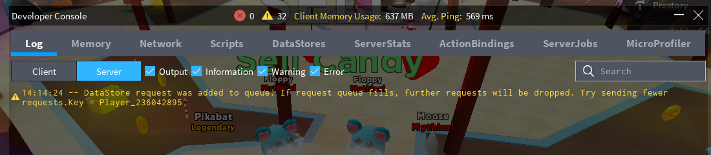

Troubleshooting
Problems in Roblox studio testing
ProfileService data saves will not persist between your Roblox studio testing sessions. In testing mode ProfileService will store and load all your profiles to and from a mock-up "DataStore" table which will disappear after you finish your testing session. The only way to know if your data saving works is through playing your game online on the Roblox servers.
Saving data which Roblox cannot serialize
I've made the decision to opt-out Profile.Data and Profile.MetaData.MetaTags automatic checking
for unserializable data types for efficiency reasons. Consequently, you must be aware of what you
MUST AVOID writing inside Profile.Data or Profile.MetaData.MetaTags, directly and inside any nested tables:
NaNvalues - you can check if a number isNaNby comparing it with itself -print(NaN == NaN) --> false(e.g.,Profile.Data = {Experience = 0/0}).NaNvalues are a result of division by zero and edge cases of some math operations (math.acos(2)is-NaN).- Table keys that are neither strings nor numbers (e.g.,
Profile.Data[game.Workspace] = true). - Mixing string keys with number keys within the same table (e.g.,
Profile.Data = {Coins = 100, [5] = "yes"}). - Storing tables with non-sequential indexes (e.g.,
Profile.Data = {[1] = "Apple", [2] = "Banana", [3546] = "Peanut"}). If you really have to store non-sequential numbers as indexes, you will have to turn those numbers intostringindexes:Profile.Data.Friends[tostring(user_id)] = {GoodFriend = true}. - Storing cyclic tables (e.g.,
Profile.Data = {Self = Profile.Data}). - Storing any
userdataincludingInstance,Vector3,CFrame,Udim2, etc. Check whether your value is auserdataby runningprint(type(value) == "userdata")(e.g.,Profile.Data = {LastPosition = Vector3.new(0, 0, 0)}) - For storage, you will have to manually convert youruserdatato tables, numbers and strings for storage (e.g.,Profile.Data = {LastPosition = {position.X, position.Y, position.Z} }).
This is a limitation of the DataStore API which ProfileService is based on.
Warning
Failure to prevent these data types may result in silent data loss, silent errors, fatal errors and overall failure to save data.
DataStore warnings caused by ProfileService

"DataStore request was added to queue. If request queue fills, further requests will be dropped. Try sending fewer requests. Key = XXXXXX"
Is this really bad?
If you're only getting one or two warnings every 30 seconds or less, most likely not. If you're receiving 10+ warnings like that per minute, you might be using Profile:Save() not the way it was intended to be used (See the API to learn more). Calling Profile:Save() several times in succession with periods less than 5 seconds between the calls will guarantee warnings like this. If you're getting 5+ warnings every minute (based on the nature of your game), you should consider not using Profile:Save() at all.
What does this warning mean?
In the particular case of ProfileService, such warnings will be thrown when two successive UpdateAsync calls happen too close to each other (around less than 5 seconds between each).
As of writing this guide (July 2020), based on a DevForum thread, Rapid successive UpdateAsync calls will be throttled by the DataStoreService and added to a queue:
Throttling queues
Every actual budget type (GetAsync, SetIncrementAsync, GetSortedAsync, OnUpdateAsync, SetIncrementSortedAsync) has its own throttling queue. Each of these five throttling queues has a queue size of 30 throttled requests max. Throttled requests are added to the queue of the corresponding budget type that it consumes.
Based on this information, and my personal testing, your data is not immediately at risk when you're only receiving 1 - 2 warnings per minute. These warnings only notify you that anything that has been requested to be saved to the DataStore will be saved after a longer delay.